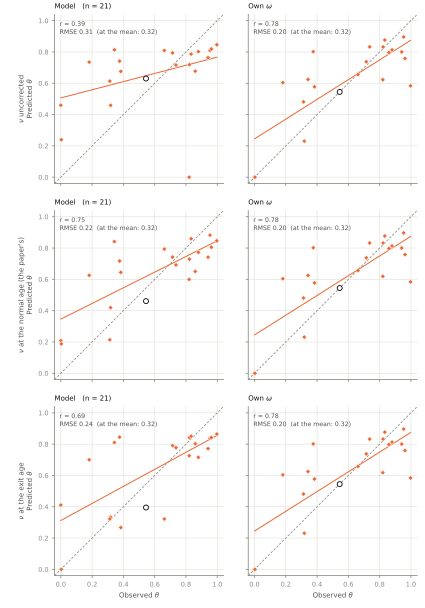
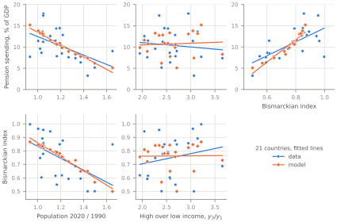
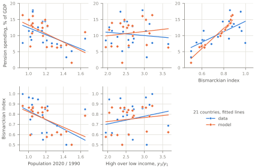
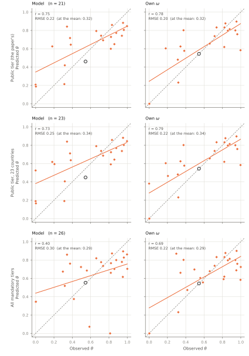
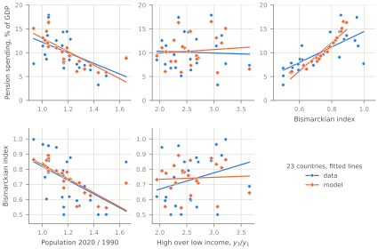
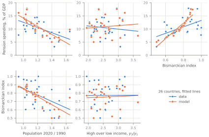
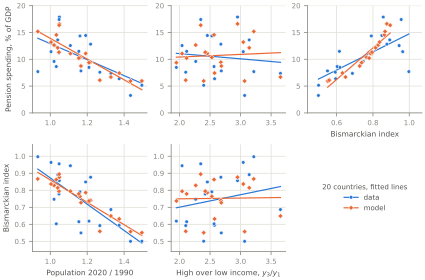
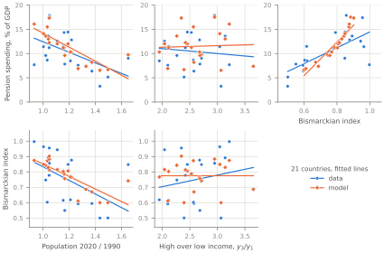

C4. The cross-country test
Section 7.3 of the paper tests the model on the countries of figure 1. Every country keeps its own workers per retiree, corrected for its gap to the U.S. in the normal retirement age, its income distribution in three groups cut at the U.S. income percentiles (appendix G.1 of the paper), its observed design and its propensities to vote by income group, from the CSES; Luxembourg, which has no CSES survey and enforces compulsory voting, votes at the same rate in every income group. Every country takes from the U.S. the discount factor \(\beta\) and the cost of redistribution as \(\kappa\), the slope of the elasticity in appendix C.2 of the paper, so that country \(n\) faces \(\lambda_{n,t} = 2\kappa\,\pi_{n,t}(1-\pi_{n,t})\) at its own ratio \(\pi_{n,t} = \Pi_{n,t}/R_{n,t}\) of the pay-as-you-go return to the market return. Every country’s ratio lies close to one half, where \(\pi(1-\pi)\) hardly moves, so that in 2020 every country’s λ lies close to the U.S. one. In the model every country also takes the same political weight of the old \(\omega\), the mean of the weights that match each country’s pension spending at its observed design; the model with each country’s own political weight, own \(\omega\) for short, calibrates each country’s \(\omega\) to that spending. The U.S. anchor, where \(\omega\) and \(\kappa\) are calibrated, is measured as every other country is (appendix G.2 of the paper). This page repeats the test under other population data and other measures of the design, without Luxembourg, and with every country in the model at the U.S. political weight.
The paper’s specification
The paper reports the test in figure 7 and table 5, the predicted against the observed designs in figure 8, and each country’s own political weight and the design it chooses with own \(\omega\) in table 10. Table C4.1 sets the paper’s test beside its variants, one column per relation of figure 1 of the paper. Its starred rows are the paper’s specification: the data and the model are those of table 5 of the paper, and with own \(\omega\) the predicted designs keep the signs of the relations that are significant in the data, and their slopes on inequality, like the data’s, are insignificant. Panel A changes the population data and panel B the measure of the design, each taken in turn below.
\(\cdot\)
| Variant | Spending on population growth | Spending on high over low income | \(I\) on population growth | \(I\) on high over low income | Spending on \(I\) | |
|---|---|---|---|---|---|---|
| A. The population data, \(\nu\) | ||||||
| Data | −10.89 \((4.11)\) | −1.02 \((2.00)\) | −0.44 \((0.18)\) | 0.076 \((0.084)\) | 16.33 \((3.91)\) | |
| Uncorrected | Model | −14.53 \((0.56)\) | 0.41 \((1.41)\) | −0.52 \((0.02)\) | 0.003 \((0.051)\) | 26.48 \((1.88)\) |
| Own \(\omega\) | −11.37 \((4.01)\) | −0.98 \((1.99)\) | −0.39 \((0.12)\) | −0.028 \((0.061)\) | 30.78 \((2.34)\) | |
| Normal age\(^{\ast}\) | Model | −14.08 \((2.58)\) | 0.45 \((1.73)\) | −0.46 \((0.08)\) | 0.004 \((0.056)\) | 29.57 \((2.20)\) |
| Own \(\omega\) | −11.37 \((4.01)\) | −0.98 \((1.99)\) | −0.40 \((0.12)\) | −0.028 \((0.061)\) | 30.77 \((2.33)\) | |
| Exit age | Model | −13.13 \((3.99)\) | 1.31 \((2.07)\) | −0.37 \((0.13)\) | 0.039 \((0.064)\) | 31.39 \((1.65)\) |
| Own \(\omega\) | −11.38 \((4.01)\) | −0.98 \((1.99)\) | −0.40 \((0.12)\) | −0.028 \((0.061)\) | 30.77 \((2.33)\) | |
| Uncorrected, without Luxembourg | Data | −14.91 \((4.92)\) | −0.98 \((2.05)\) | −0.77 \((0.18)\) | 0.073 \((0.085)\) | 16.90 \((3.94)\) |
| Model | −15.58 \((0.53)\) | 0.57 \((1.26)\) | −0.52 \((0.03)\) | 0.011 \((0.043)\) | 28.09 \((2.04)\) | |
| Own \(\omega\) | −15.61 \((4.75)\) | −0.95 \((2.04)\) | −0.57 \((0.13)\) | −0.027 \((0.063)\) | 30.72 \((2.38)\) | |
| B. The measure of the design, \(\theta\) | ||||||
| Public tier\(^{\ast}\) | Data | −10.89 \((4.11)\) | −1.02 \((2.00)\) | −0.44 \((0.18)\) | 0.076 \((0.084)\) | 16.33 \((3.91)\) |
| Model | −14.08 \((2.58)\) | 0.45 \((1.73)\) | −0.46 \((0.08)\) | 0.004 \((0.056)\) | 29.57 \((2.20)\) | |
| Own \(\omega\) | −11.37 \((4.01)\) | −0.98 \((1.99)\) | −0.40 \((0.12)\) | −0.028 \((0.061)\) | 30.77 \((2.33)\) | |
| Public tier, 23 countries | Data | −11.10 \((4.05)\) | −0.37 \((1.93)\) | −0.45 \((0.18)\) | 0.108 \((0.082)\) | 16.26 \((3.44)\) |
| Model | −14.08 \((2.54)\) | 0.82 \((1.62)\) | −0.47 \((0.08)\) | 0.013 \((0.053)\) | 29.32 \((2.11)\) | |
| Own \(\omega\) | −11.58 \((3.95)\) | −0.35 \((1.92)\) | −0.40 \((0.12)\) | −0.007 \((0.059)\) | 30.77 \((2.15)\) | |
| All mandatory tiers | Data | −9.94 \((3.36)\) | −1.21 \((1.67)\) | −0.38 \((0.16)\) | 0.003 \((0.075)\) | 12.27 \((3.84)\) |
| Model | −15.50 \((2.33)\) | 0.98 \((1.68)\) | −0.49 \((0.07)\) | 0.016 \((0.054)\) | 29.45 \((2.22)\) | |
| Own \(\omega\) | −10.25 \((3.42)\) | −1.34 \((1.70)\) | −0.35 \((0.10)\) | −0.047 \((0.052)\) | 30.67 \((2.10)\) | |
Note: Least-squares slopes, standard errors in parentheses, the U.S. included. Panel A: \(\nu\) corrected for each country’s gap to the U.S. normal retirement age, uncorrected, or corrected for its gap in the effective age of labor-market exit, on the 21 countries of the paper’s measure; the data do not depend on \(\nu\). The last three rows leave out Luxembourg, which has no CSES survey, on 20 countries. Panel B: each measure of \(\theta\) is its own cross-section, the data and the model calibrated to it, on its countries (public tier 21, public tier, 23 countries 23, all mandatory tiers 26), at the paper’s \(\nu\). The model as in figure 7 of the paper, own \(\omega\) as in figure 8 of the paper. \(^{\ast}\)The paper’s specification; its data and model rows are those of table 5 of the paper.
Source
Reads:
data/oecd26_sample.csvdata/oecd26_theta.csvdata/oecd29_distribution.csvdata/oecdFigure1.csvresults/calibration/US_rhoGridCommonX.csvresults/oecd26/anchor.csvresults/oecd26/layer1.csvresults/oecd26/layer2.csvresults/oecd26_theta_A/anchor.csvresults/oecd26_theta_A/calibration/US_rhoGridCommonX.csvresults/oecd26_theta_A/layer1.csvresults/oecd26_theta_A/layer2.csvresults/oecd26_theta_B/anchor.csvresults/oecd26_theta_B/calibration/US_rhoGridCommonX.csvresults/oecd26_theta_B/layer1.csvresults/oecd26_theta_B/layer2.csv
Built by tablesOECD26.oecd26Variants (python/paper) at commit 5fcff38. Rebuild: python python/paper/build.py --no-copy --only OECD26_Variants.
Other population data
Panel A of table C4.1 leaves workers per retiree uncorrected for the retirement age, or corrects them for each country’s gap to the U.S. in the effective age of labor-market exit in place of the normal retirement age (OECD 2021, fig. 6.14). The data side of the test does not depend on them. With own \(\omega\) the test is hardly affected, since the political weights are calibrated to spending: no slope changes by more than 0.01, and the correlation between predicted and observed designs stays at 0.78 (figure C4.1). The model keeps the signs of the three relations that are significant in the data, and its slopes on inequality stay insignificant, but its predicted designs move more. At the exit age the correlation is 0.69, against 0.75 at the normal age. Uncorrected, it falls to 0.39, because of Luxembourg.
Luxembourg’s population grew to 1.65 times its 1990 size by 2020. At that variant’s mean political weight, 1.33, this supports a tax of only 5.5% at its observed design, about two fifths of the 12.9% its spending implies, and its electorate of 1990 chooses the Beveridgean corner for 2020, against the observed 0.820. Luxembourg’s normal retirement age is four years below the U.S. one, and the correction brings its workers per retiree in 2020 to 1.17 and its predicted design to 0.600. Without Luxembourg, on the 20 countries with a CSES survey, the correlation in the model is 0.73 with workers per retiree uncorrected, between the 0.69 of the exit age and the 0.77 of the normal age on the same countries (the last rows of panel A, and Luxembourg left out below).
\(\cdot\)

Source
Reads:
data/oecd26_sample.csvdata/oecd26_theta.csvdata/oecd29_distribution.csvdata/oecdFigure1.csvresults/calibration/US_rhoGridCommonX.csvresults/oecd26/anchor.csvresults/oecd26/layer1.csvresults/oecd26/layer2.csv
Built by figuresOECD26.oecd26ThetaFitRows (python/paper) at commit 5fcff38. Rebuild: python python/paper/build.py --no-copy --only OECD26_ThetaFitPopulation.
Uncorrected
\(\cdot\)

Source
Reads:
data/oecd26_sample.csvdata/oecd26_theta.csvdata/oecd29_distribution.csvdata/oecdFigure1.csvresults/calibration/US_rhoGridCommonX.csvresults/oecd26/anchor.csvresults/oecd26/layer1.csv
Built by figuresOECD26.oecd26Figure (python/paper) at commit 5fcff38. Rebuild: python python/paper/build.py --no-copy --only OECD26_Layer1_nuNone.
\(\cdot\)
| Data | Model, own \(\omega\) | |||||||
|---|---|---|---|---|---|---|---|---|
| Country | \(\nu_{2020}\) | \(\tilde V\) | spending | \(I\) | \(\theta\) | \(\omega\) | \(\theta\) | \(I\) |
| Austria | 1.16 | 0.161 | 14.3 | 0.791 | 0.736 | 1.601 | 0.833 | 0.857 |
| Belgium | 1.16 | 0.104 | 11.5 | 0.616 | 0.376 | 1.442 | 0.802 | 0.835 |
| Canada | 1.37 | 0.171 | 6.4 | 0.595 | 0.318 | 1.226 | 0.230 | 0.565 |
| Czech Republic | 1.02 | 0.170 | 8.6 | 0.603 | 0.342 | 1.073 | 0.625 | 0.727 |
| Finland | 1.11 | 0.094 | 12.6 | 0.944 | 0.941 | 1.403 | 0.800 | 0.833 |
| France | 1.16 | 0.150 | 14.4 | 0.849 | 0.822 | 1.592 | 0.832 | 0.856 |
| Germany | 1.05 | 0.148 | 11.2 | 0.778 | 0.714 | 1.232 | 0.738 | 0.792 |
| Greece | 1.04 | 0.225 | 17.9 | 0.857 | 0.833 | 1.702 | 0.876 | 0.890 |
| Hungary | 0.94 | 0.265 | 7.7 | 0.997 | 0.997 | 0.946 | 0.584 | 0.706 |
| Ireland | 1.42 | 0.240 | 3.3 | 0.500 | 0.000 | 0.969 | 0.000 | 0.500 |
| Italy | 1.05 | 0.134 | 17.4 | 0.956 | 0.954 | 1.679 | 0.896 | 0.906 |
| Japan | 1.02 | 0.124 | 9.6 | 0.747 | 0.662 | 1.111 | 0.656 | 0.744 |
| Luxembourg | 1.65 | 0.187 | 9.0 | 0.848 | 0.820 | 1.729 | 0.623 | 0.726 |
| New Zealand | 1.49 | 0.141 | 5.1 | 0.501 | 0.003 | 1.243 | 0.000 | 0.500 |
| Norway | 1.27 | 0.101 | 7.6 | 0.593 | 0.313 | 1.245 | 0.481 | 0.658 |
| Poland | 1.00 | 0.240 | 11.4 | 0.964 | 0.962 | 1.199 | 0.758 | 0.805 |
| Portugal | 1.04 | 0.249 | 13.6 | 0.892 | 0.879 | 1.364 | 0.813 | 0.843 |
| Spain | 1.22 | 0.183 | 12.8 | 0.877 | 0.859 | 1.547 | 0.797 | 0.831 |
| Sweden | 1.21 | 0.081 | 8.5 | 0.619 | 0.383 | 1.251 | 0.578 | 0.703 |
| United Kingdom | 1.17 | 0.185 | 7.8 | 0.550 | 0.181 | 1.194 | 0.604 | 0.716 |
| United States\(^{\ast}\) | 1.34 | 0.333 | 7.4 | 0.687 | 0.544 | 1.263 | 0.544 | 0.687 |
Note: 21 countries. \(\nu_{2020}\), workers per retiree; \(\tilde V\), the dispersion of relative incomes at the U.S. income percentiles; spending in % of GDP; \(\theta\), the earnings-linked share of the least-squares line through the public pension at 0.5, 1 and 2 times average earnings (\(c/(a+c)\) of \(p(y) = a + c\,y\)), times one minus the share of public spending on minimum top-ups and tested benefits, and \(I = 1/(2-\theta)\), the Bismarckian index. \(\omega\) is calibrated to spending at the observed design at \(\beta = 0.65\) and the U.S. \(\kappa = 97.29\), \(\lambda_{n,t} = 2\kappa\,\pi_{n,t}(1-\pi_{n,t})\), \(\pi_{n,t} = \Pi_{n,t}/R_{n,t}\); the last two columns are the model’s design, in force in 2020 on the freely simulated path, chosen in 1990, and its index. \(^{\ast}\)The U.S. is the anchor, where \(\omega\) and \(\kappa\) are calibrated. Turnout: each country’s own propensities to vote by income group, from the CSES; Luxembourg, which has no CSES survey and enforces compulsory voting, at a flat profile.
Source
Reads:
data/oecd26_sample.csvdata/oecd26_theta.csvdata/oecd29_distribution.csvdata/oecdFigure1.csvresults/calibration/US_rhoGridCommonX.csvresults/oecd26/anchor.csvresults/oecd26/layer2.csv
Built by tablesOECD26.oecd26Omega (python/paper) at commit 5fcff38. Rebuild: python python/paper/build.py --no-copy --only OECD26_Omega_nuNone.
The effective exit age
\(\cdot\)

Source
Reads:
data/oecd26_sample.csvdata/oecd26_theta.csvdata/oecd29_distribution.csvdata/oecdFigure1.csvresults/calibration/US_rhoGridCommonX.csvresults/oecd26/anchor.csvresults/oecd26/layer1.csv
Built by figuresOECD26.oecd26Figure (python/paper) at commit 5fcff38. Rebuild: python python/paper/build.py --no-copy --only OECD26_Layer1_nuExit.
\(\cdot\)
| Data | Model, own \(\omega\) | |||||||
|---|---|---|---|---|---|---|---|---|
| Country | \(\nu_{2020}\) | \(\tilde V\) | spending | \(I\) | \(\theta\) | \(\omega\) | \(\theta\) | \(I\) |
| Austria | 0.95 | 0.161 | 14.3 | 0.791 | 0.736 | 1.306 | 0.832 | 0.856 |
| Belgium | 0.87 | 0.104 | 11.5 | 0.616 | 0.376 | 1.088 | 0.801 | 0.834 |
| Canada | 1.28 | 0.171 | 6.4 | 0.595 | 0.318 | 1.139 | 0.231 | 0.565 |
| Czech Republic | 0.91 | 0.170 | 8.6 | 0.603 | 0.342 | 0.953 | 0.625 | 0.727 |
| Finland | 0.97 | 0.094 | 12.6 | 0.944 | 0.941 | 1.228 | 0.800 | 0.833 |
| France | 0.84 | 0.150 | 14.4 | 0.849 | 0.822 | 1.152 | 0.833 | 0.857 |
| Germany | 0.93 | 0.148 | 11.2 | 0.778 | 0.714 | 1.094 | 0.738 | 0.792 |
| Greece | 0.79 | 0.225 | 17.9 | 0.857 | 0.833 | 1.295 | 0.877 | 0.890 |
| Hungary | 0.78 | 0.265 | 7.7 | 0.997 | 0.997 | 0.788 | 0.584 | 0.706 |
| Ireland | 1.28 | 0.240 | 3.3 | 0.500 | 0.000 | 0.875 | 0.000 | 0.500 |
| Italy | 0.88 | 0.134 | 17.4 | 0.956 | 0.954 | 1.405 | 0.896 | 0.906 |
| Japan | 1.27 | 0.124 | 9.6 | 0.747 | 0.662 | 1.383 | 0.657 | 0.745 |
| Luxembourg | 1.02 | 0.187 | 9.0 | 0.848 | 0.820 | 1.067 | 0.618 | 0.724 |
| New Zealand | 1.80 | 0.141 | 5.1 | 0.501 | 0.003 | 1.497 | 0.000 | 0.500 |
| Norway | 1.27 | 0.101 | 7.6 | 0.593 | 0.313 | 1.247 | 0.481 | 0.658 |
| Poland | 0.84 | 0.240 | 11.4 | 0.964 | 0.962 | 1.002 | 0.759 | 0.806 |
| Portugal | 1.04 | 0.249 | 13.6 | 0.892 | 0.879 | 1.368 | 0.813 | 0.843 |
| Spain | 0.92 | 0.183 | 12.8 | 0.877 | 0.859 | 1.166 | 0.797 | 0.831 |
| Sweden | 1.28 | 0.081 | 8.5 | 0.619 | 0.383 | 1.324 | 0.577 | 0.703 |
| United Kingdom | 1.07 | 0.185 | 7.8 | 0.550 | 0.181 | 1.093 | 0.604 | 0.716 |
| United States\(^{\ast}\) | 1.34 | 0.333 | 7.4 | 0.687 | 0.544 | 1.263 | 0.544 | 0.687 |
Note: 21 countries. \(\nu_{2020}\), workers per retiree; \(\tilde V\), the dispersion of relative incomes at the U.S. income percentiles; spending in % of GDP; \(\theta\), the earnings-linked share of the least-squares line through the public pension at 0.5, 1 and 2 times average earnings (\(c/(a+c)\) of \(p(y) = a + c\,y\)), times one minus the share of public spending on minimum top-ups and tested benefits, and \(I = 1/(2-\theta)\), the Bismarckian index. \(\omega\) is calibrated to spending at the observed design at \(\beta = 0.65\) and the U.S. \(\kappa = 97.29\), \(\lambda_{n,t} = 2\kappa\,\pi_{n,t}(1-\pi_{n,t})\), \(\pi_{n,t} = \Pi_{n,t}/R_{n,t}\); the last two columns are the model’s design, in force in 2020 on the freely simulated path, chosen in 1990, and its index. \(^{\ast}\)The U.S. is the anchor, where \(\omega\) and \(\kappa\) are calibrated. Turnout: each country’s own propensities to vote by income group, from the CSES; Luxembourg, which has no CSES survey and enforces compulsory voting, at a flat profile.
Source
Reads:
data/oecd26_sample.csvdata/oecd26_theta.csvdata/oecd29_distribution.csvdata/oecdFigure1.csvresults/calibration/US_rhoGridCommonX.csvresults/oecd26/anchor.csvresults/oecd26/layer2.csv
Built by tablesOECD26.oecd26Omega (python/paper) at commit 5fcff38. Rebuild: python python/paper/build.py --no-copy --only OECD26_Omega_nuExit.
Other measures of the design
Panel B of table C4.1 changes the measure of the design. Each measure is its own cross-section: the data and the model are calibrated to it, on the countries where it is defined, at the paper’s population data, with the U.S. anchor recalibrated under it. The public tier on 23 countries extends the paper’s measure, the public tier, to every country whose public pension is not tested against funded tiers, which adds the Netherlands and Switzerland. All mandatory tiers takes the slope over all mandatory and quasi-mandatory tiers, public and funded (OECD 2021, table 4.1), with the same correction for top-ups, adds the spending of the funded tiers to the tax and covers all 26 countries in which informal employment is below a quarter of employment.
The public tier on 23 countries leaves the test as it is, with correlations between predicted and observed designs of 0.73 in the model and 0.79 with own \(\omega\) (figure C4.4). All mandatory tiers keeps the signs of the significant slopes. Its data add both the funded tiers and the five countries where they are large or the public pension is tested against them; in these data the slope of the index on population growth is −0.38, against −0.44 under the paper’s measure, while its slope on high over low income nearly vanishes, 0.003 against 0.076. The model predicts the design less well, with a correlation of 0.40, partly because of two countries that only this measure covers: Iceland, which the model puts at the Beveridgean corner against an observed 0.813, and Australia, which it puts at 0.072 against 0.587. Without Iceland the correlation is 0.56, and without both 0.68. With own \(\omega\), where Iceland’s political weight is calibrated to its spending, its design is 0.592 and the correlation is 0.69.
\(\cdot\)

Source
Reads:
data/oecd26_sample.csvdata/oecd26_theta.csvdata/oecd29_distribution.csvdata/oecdFigure1.csvresults/calibration/US_rhoGridCommonX.csvresults/oecd26/anchor.csvresults/oecd26/layer1.csvresults/oecd26/layer2.csvresults/oecd26_theta_A/anchor.csvresults/oecd26_theta_A/calibration/US_rhoGridCommonX.csvresults/oecd26_theta_A/layer1.csvresults/oecd26_theta_A/layer2.csvresults/oecd26_theta_B/anchor.csvresults/oecd26_theta_B/calibration/US_rhoGridCommonX.csvresults/oecd26_theta_B/layer1.csvresults/oecd26_theta_B/layer2.csv
Built by figuresOECD26.oecd26ThetaFitRows (python/paper) at commit 5fcff38. Rebuild: python python/paper/build.py --no-copy --only OECD26_ThetaFitMeasure.
The public tier on 23 countries
\(\cdot\)

Source
Reads:
data/oecd26_sample.csvdata/oecd26_theta.csvdata/oecd29_distribution.csvdata/oecdFigure1.csvresults/oecd26_theta_A/anchor.csvresults/oecd26_theta_A/calibration/US_rhoGridCommonX.csvresults/oecd26_theta_A/layer1.csv
Built by figuresOECD26.oecd26Figure (python/paper) at commit 5fcff38. Rebuild: python python/paper/build.py --no-copy --only OECD26_Layer1_thetaA.
\(\cdot\)
| Data | Model, own \(\omega\) | |||||||
|---|---|---|---|---|---|---|---|---|
| Country | \(\nu_{2020}\) | \(\tilde V\) | spending | \(I\) | \(\theta\) | \(\omega\) | \(\theta\) | \(I\) |
| Austria | 1.08 | 0.161 | 14.3 | 0.791 | 0.736 | 1.490 | 0.833 | 0.857 |
| Belgium | 1.08 | 0.104 | 11.5 | 0.616 | 0.376 | 1.342 | 0.802 | 0.835 |
| Canada | 1.27 | 0.171 | 6.4 | 0.595 | 0.318 | 1.133 | 0.231 | 0.565 |
| Czech Republic | 0.87 | 0.170 | 8.6 | 0.603 | 0.342 | 0.917 | 0.625 | 0.727 |
| Finland | 1.03 | 0.094 | 12.6 | 0.944 | 0.941 | 1.308 | 0.800 | 0.833 |
| France | 1.04 | 0.150 | 14.4 | 0.849 | 0.822 | 1.430 | 0.832 | 0.856 |
| Germany | 1.03 | 0.148 | 11.2 | 0.778 | 0.714 | 1.204 | 0.738 | 0.792 |
| Greece | 0.79 | 0.225 | 17.9 | 0.857 | 0.833 | 1.295 | 0.877 | 0.890 |
| Hungary | 0.85 | 0.265 | 7.7 | 0.997 | 0.997 | 0.858 | 0.584 | 0.706 |
| Ireland | 1.42 | 0.240 | 3.3 | 0.500 | 0.000 | 0.969 | 0.000 | 0.500 |
| Italy | 0.80 | 0.134 | 17.4 | 0.956 | 0.954 | 1.276 | 0.896 | 0.906 |
| Japan | 0.96 | 0.124 | 9.6 | 0.747 | 0.662 | 1.039 | 0.656 | 0.744 |
| Luxembourg | 1.17 | 0.187 | 9.0 | 0.848 | 0.820 | 1.228 | 0.619 | 0.724 |
| Netherlands | 1.20 | 0.116 | 6.8 | 0.500 | 0.000 | 1.134 | 0.381 | 0.618 |
| New Zealand | 1.37 | 0.141 | 5.1 | 0.501 | 0.003 | 1.145 | 0.000 | 0.500 |
| Norway | 1.35 | 0.101 | 7.6 | 0.593 | 0.313 | 1.322 | 0.481 | 0.658 |
| Poland | 0.94 | 0.240 | 11.4 | 0.964 | 0.962 | 1.121 | 0.759 | 0.806 |
| Portugal | 0.99 | 0.249 | 13.6 | 0.892 | 0.879 | 1.304 | 0.813 | 0.843 |
| Spain | 1.13 | 0.183 | 12.8 | 0.877 | 0.859 | 1.437 | 0.797 | 0.831 |
| Sweden | 1.12 | 0.081 | 8.5 | 0.619 | 0.383 | 1.162 | 0.577 | 0.703 |
| Switzerland | 1.19 | 0.127 | 6.9 | 0.557 | 0.205 | 1.133 | 0.465 | 0.651 |
| United Kingdom | 1.17 | 0.185 | 7.8 | 0.550 | 0.181 | 1.194 | 0.604 | 0.716 |
| United States\(^{\ast}\) | 1.34 | 0.333 | 7.4 | 0.687 | 0.544 | 1.263 | 0.544 | 0.687 |
Note: 23 countries. \(\nu_{2020}\), workers per retiree; \(\tilde V\), the dispersion of relative incomes at the U.S. income percentiles; spending in % of GDP; \(\theta\) measured as public tier, 23 countries (C4), and \(I = 1/(2-\theta)\). \(\omega\) is calibrated to spending at the observed design at \(\beta = 0.65\) and the U.S. \(\kappa = 97.29\), \(\lambda_{n,t} = 2\kappa\,\pi_{n,t}(1-\pi_{n,t})\), \(\pi_{n,t} = \Pi_{n,t}/R_{n,t}\); the last two columns are the model’s design, in force in 2020 on the freely simulated path, chosen in 1990, and its index. \(^{\ast}\)The U.S. is the anchor, where \(\omega\) and \(\kappa\) are calibrated. Turnout: each country’s own propensities to vote by income group, from the CSES; Luxembourg, which has no CSES survey and enforces compulsory voting, at a flat profile.
Source
Reads:
data/oecd26_sample.csvdata/oecd26_theta.csvdata/oecd29_distribution.csvdata/oecdFigure1.csvresults/oecd26_theta_A/anchor.csvresults/oecd26_theta_A/calibration/US_rhoGridCommonX.csvresults/oecd26_theta_A/layer2.csv
Built by tablesOECD26.oecd26Omega (python/paper) at commit 5fcff38. Rebuild: python python/paper/build.py --no-copy --only OECD26_Omega_thetaA.
All mandatory tiers
\(\cdot\)

Source
Reads:
data/oecd26_sample.csvdata/oecd26_theta.csvdata/oecd29_distribution.csvdata/oecdFigure1.csvresults/oecd26_theta_B/anchor.csvresults/oecd26_theta_B/calibration/US_rhoGridCommonX.csvresults/oecd26_theta_B/layer1.csv
Built by figuresOECD26.oecd26Figure (python/paper) at commit 5fcff38. Rebuild: python python/paper/build.py --no-copy --only OECD26_Layer1_thetaB.
\(\cdot\)
| Data | Model, own \(\omega\) | |||||||
|---|---|---|---|---|---|---|---|---|
| Country | \(\nu_{2020}\) | \(\tilde V\) | spending | \(I\) | \(\theta\) | \(\omega\) | \(\theta\) | \(I\) |
| Australia | 1.50 | 0.202 | 8.7 | 0.708 | 0.587 | 1.529 | 0.556 | 0.693 |
| Austria | 1.08 | 0.161 | 14.3 | 0.791 | 0.736 | 1.490 | 0.833 | 0.857 |
| Belgium | 1.08 | 0.104 | 11.5 | 0.616 | 0.376 | 1.342 | 0.802 | 0.835 |
| Canada | 1.27 | 0.171 | 6.4 | 0.595 | 0.318 | 1.133 | 0.231 | 0.565 |
| Czech Republic | 0.87 | 0.170 | 9.0 | 0.603 | 0.342 | 0.942 | 0.661 | 0.747 |
| Denmark | 1.09 | 0.116 | 10.2 | 0.664 | 0.494 | 1.236 | 0.697 | 0.768 |
| Finland | 1.03 | 0.094 | 12.6 | 0.944 | 0.941 | 1.308 | 0.800 | 0.833 |
| France | 1.04 | 0.150 | 14.4 | 0.849 | 0.822 | 1.430 | 0.832 | 0.856 |
| Germany | 1.03 | 0.148 | 11.2 | 0.778 | 0.714 | 1.204 | 0.738 | 0.792 |
| Greece | 0.79 | 0.225 | 17.9 | 0.857 | 0.833 | 1.298 | 0.877 | 0.891 |
| Hungary | 0.85 | 0.265 | 7.7 | 0.997 | 0.997 | 0.858 | 0.584 | 0.706 |
| Iceland | 1.52 | 0.112 | 8.7 | 0.842 | 0.813 | 1.588 | 0.592 | 0.710 |
| Ireland | 1.42 | 0.240 | 3.3 | 0.500 | 0.000 | 0.969 | 0.000 | 0.500 |
| Italy | 0.80 | 0.134 | 17.7 | 0.956 | 0.954 | 1.294 | 0.900 | 0.909 |
| Japan | 0.96 | 0.124 | 9.9 | 0.747 | 0.662 | 1.058 | 0.678 | 0.757 |
| Luxembourg | 1.17 | 0.187 | 9.0 | 0.848 | 0.820 | 1.228 | 0.619 | 0.724 |
| Netherlands | 1.20 | 0.116 | 10.0 | 0.954 | 0.952 | 1.342 | 0.688 | 0.762 |
| New Zealand | 1.37 | 0.141 | 5.1 | 0.501 | 0.003 | 1.145 | 0.000 | 0.500 |
| Norway | 1.35 | 0.101 | 7.6 | 0.632 | 0.417 | 1.317 | 0.473 | 0.655 |
| Poland | 0.94 | 0.240 | 11.4 | 0.964 | 0.962 | 1.121 | 0.759 | 0.806 |
| Portugal | 0.99 | 0.249 | 13.6 | 0.892 | 0.879 | 1.304 | 0.813 | 0.843 |
| Spain | 1.13 | 0.183 | 12.8 | 0.877 | 0.859 | 1.437 | 0.797 | 0.831 |
| Sweden | 1.12 | 0.081 | 10.5 | 1.000 | 1.000 | 1.294 | 0.724 | 0.784 |
| Switzerland | 1.19 | 0.127 | 12.7 | 0.587 | 0.297 | 1.679 | 0.870 | 0.885 |
| United Kingdom | 1.17 | 0.185 | 8.5 | 0.694 | 0.559 | 1.194 | 0.604 | 0.716 |
| United States\(^{\ast}\) | 1.34 | 0.333 | 7.4 | 0.687 | 0.544 | 1.263 | 0.544 | 0.687 |
Note: 26 countries. \(\nu_{2020}\), workers per retiree; \(\tilde V\), the dispersion of relative incomes at the U.S. income percentiles; spending in % of GDP; \(\theta\) measured as all mandatory tiers (C4), and \(I = 1/(2-\theta)\). \(\omega\) is calibrated to spending at the observed design at \(\beta = 0.65\) and the U.S. \(\kappa = 97.29\), \(\lambda_{n,t} = 2\kappa\,\pi_{n,t}(1-\pi_{n,t})\), \(\pi_{n,t} = \Pi_{n,t}/R_{n,t}\); the last two columns are the model’s design, in force in 2020 on the freely simulated path, chosen in 1990, and its index. \(^{\ast}\)The U.S. is the anchor, where \(\omega\) and \(\kappa\) are calibrated. Turnout: each country’s own propensities to vote by income group, from the CSES; Luxembourg, which has no CSES survey and enforces compulsory voting, at a flat profile.
Source
Reads:
data/oecd26_sample.csvdata/oecd26_theta.csvdata/oecd29_distribution.csvdata/oecdFigure1.csvresults/oecd26_theta_B/anchor.csvresults/oecd26_theta_B/calibration/US_rhoGridCommonX.csvresults/oecd26_theta_B/layer2.csv
Built by tablesOECD26.oecd26Omega (python/paper) at commit 5fcff38. Rebuild: python python/paper/build.py --no-copy --only OECD26_Omega_thetaB.
Luxembourg left out
The test on the countries with a CSES survey, all but Luxembourg. Without Luxembourg the data’s index falls more steeply with population growth than with it, and the model’s index falls a little less steeply, within a standard error of the data’s slope.
\(\cdot\)

Source
Reads:
data/oecd26_sample.csvdata/oecd26_theta.csvdata/oecd29_distribution.csvdata/oecdFigure1.csvresults/calibration/US_rhoGridCommonX.csvresults/oecd26/anchor.csvresults/oecd26/layer1.csv
Built by figuresOECD26.oecd26Figure (python/paper) at commit 5fcff38. Rebuild: python python/paper/build.py --no-copy --only OECD26_Layer1_cses.
\(\cdot\)
| Relation | Data | Model | Own \(\omega\) |
|---|---|---|---|
| Pension spending on population growth | −14.91 \((4.92)\) | −19.31 \((2.45)\) | −15.61 \((4.75)\) |
| Pension spending on high over low income | −0.98 \((2.05)\) | 0.50 \((1.76)\) | −0.95 \((2.04)\) |
| Bismarckian index on population growth | −0.77 \((0.18)\) | −0.66 \((0.06)\) | −0.57 \((0.13)\) |
| Bismarckian index on high over low income | 0.073 \((0.085)\) | 0.005 \((0.057)\) | −0.027 \((0.063)\) |
| Pension spending on the Bismarckian index | 16.90 \((3.94)\) | 29.39 \((2.24)\) | 30.72 \((2.38)\) |
Note: Least-squares slopes, standard errors in parentheses, 20 countries. The model’s index is \(1/(2-\theta)\) of the design in force in 2020, chosen in 1990, and its spending \(\tau(1-\alpha)\) in 2020 on the path of the design it chooses. The model: every country at the U.S. \(\beta = 0.65\) and \(\kappa = 97.29\), at \(\omega = 1.21\), the mean of the countries’ own \(\omega\), each at its cost \(\lambda_{n,t} = 2\kappa\,\pi_{n,t}(1-\pi_{n,t})\), \(\pi_{n,t} = \Pi_{n,t}/R_{n,t}\); own \(\omega\): each country’s \(\omega\) calibrated to its spending at its observed design. Turnout: each country’s own propensities to vote by income group, from the CSES.
Source
Reads:
data/oecd26_sample.csvdata/oecd26_theta.csvdata/oecd29_distribution.csvdata/oecdFigure1.csvresults/calibration/US_rhoGridCommonX.csvresults/oecd26/anchor.csvresults/oecd26/layer1.csvresults/oecd26/layer2.csv
Built by tablesOECD26.oecd26Slopes (python/paper) at commit 5fcff38. Rebuild: python python/paper/build.py --no-copy --only OECD26_Slopes_cses.
The model at the U.S. political weight
Every country in the model at the U.S. \(\omega\) in place of the mean of the countries’ own weights. The results with own \(\omega\) do not depend on this choice and are the paper’s. At the U.S. weight, above that mean, the countries choose somewhat more Bismarckian designs and spend more, while the cross-section is nearly the paper’s: the predicted designs track the observed ones about as closely, and every slope keeps its sign.
\(\cdot\)

Source
Reads:
data/oecd26_sample.csvdata/oecd26_theta.csvdata/oecd29_distribution.csvdata/oecdFigure1.csvresults/calibration/US_rhoGridCommonX.csvresults/oecd26/anchor.csvresults/oecd26/layer1.csv
Built by figuresOECD26.oecd26Figure (python/paper) at commit 5fcff38. Rebuild: python python/paper/build.py --no-copy --only OECD26_Layer1_omegaUS.
\(\cdot\)
| Relation | Data | Model | Own \(\omega\) |
|---|---|---|---|
| Pension spending on population growth | −10.89 \((4.11)\) | −14.38 \((2.61)\) | −11.37 \((4.01)\) |
| Pension spending on high over low income | −1.02 \((2.00)\) | 0.39 \((1.76)\) | −0.98 \((1.99)\) |
| Bismarckian index on population growth | −0.44 \((0.18)\) | −0.41 \((0.07)\) | −0.40 \((0.12)\) |
| Bismarckian index on high over low income | 0.076 \((0.084)\) | 0.000 \((0.049)\) | −0.028 \((0.061)\) |
| Pension spending on the Bismarckian index | 16.33 \((3.91)\) | 33.91 \((2.55)\) | 30.77 \((2.33)\) |
Note: Least-squares slopes, standard errors in parentheses, 21 countries. The model’s index is \(1/(2-\theta)\) of the design in force in 2020, chosen in 1990, and its spending \(\tau(1-\alpha)\) in 2020 on the path of the design it chooses. The model: every country at the U.S. \(\beta = 0.65\), \(\omega = 1.26\) and \(\kappa = 97.29\), each at its cost \(\lambda_{n,t} = 2\kappa\,\pi_{n,t}(1-\pi_{n,t})\), \(\pi_{n,t} = \Pi_{n,t}/R_{n,t}\); own \(\omega\): each country’s \(\omega\) calibrated to its spending at its observed design. Turnout: each country’s own propensities to vote by income group, from the CSES; Luxembourg, which has no CSES survey and enforces compulsory voting, at a flat profile.
Source
Reads:
data/oecd26_sample.csvdata/oecd26_theta.csvdata/oecd29_distribution.csvdata/oecdFigure1.csvresults/calibration/US_rhoGridCommonX.csvresults/oecd26/anchor.csvresults/oecd26/layer1.csvresults/oecd26/layer2.csv
Built by tablesOECD26.oecd26Slopes (python/paper) at commit 5fcff38. Rebuild: python python/paper/build.py --no-copy --only OECD26_Slopes_omegaUS.